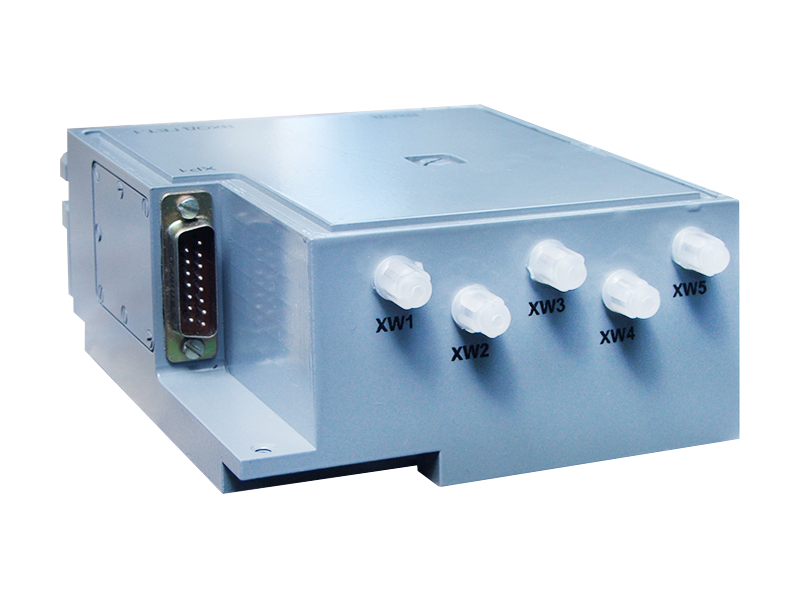
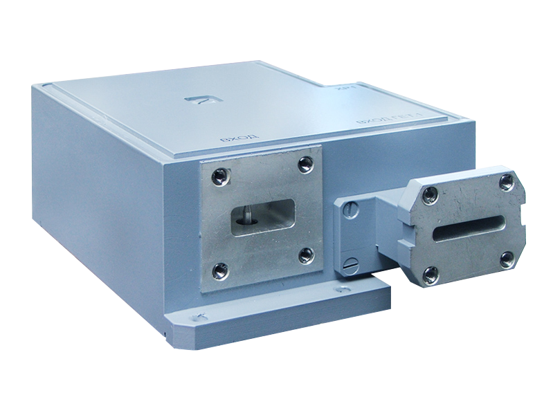

434854.004
Designed for use in receiving blocks of modern weather-navigation radars and provides:
The radar receiving module has an input attenuator for adjusting the level of the input signal and protecting the low-noise amplifier for the time of the probe pulse, with a short recovery time.
 
| operating frequency range | X |
| noise figure, dB | 3.5 |
| the upper limit of the linearity of the amplitude characteristic, dBm | -35 |
| coefficient of standing wave on the input, dB | 2.5 |
| selectivity through the mirror reception channels, dB | 40 |
| bandwidth for fpt2 = 28 MHz is -3 dB, MHz | 5 |
| bandwidth for fpt2 = 84 MHz at -3 dB, MHz | 30 |
| depth of discrete adjustment of the transmission factor - in broadband mode, dB | 15 |
| non-identity of the phase-frequency characteristics between outputs of quadrature channels (broadband mode) | (90±5)o |
| maximum output voltage at the outputs fpt2 = 84 MHz, V | ±1 |